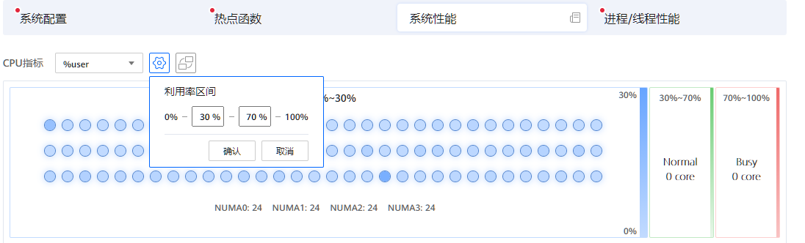
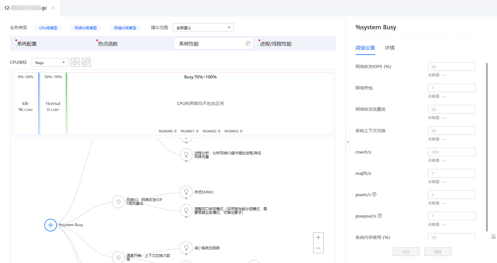
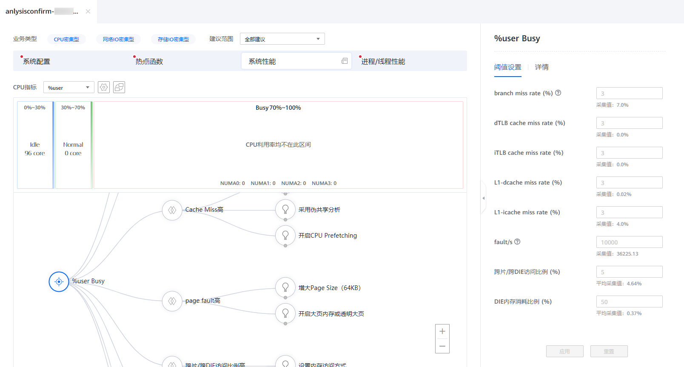
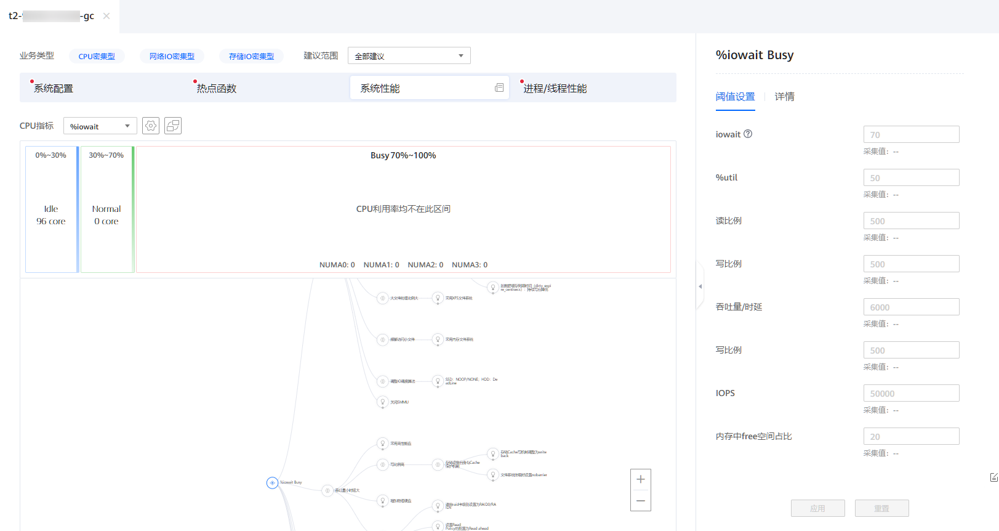
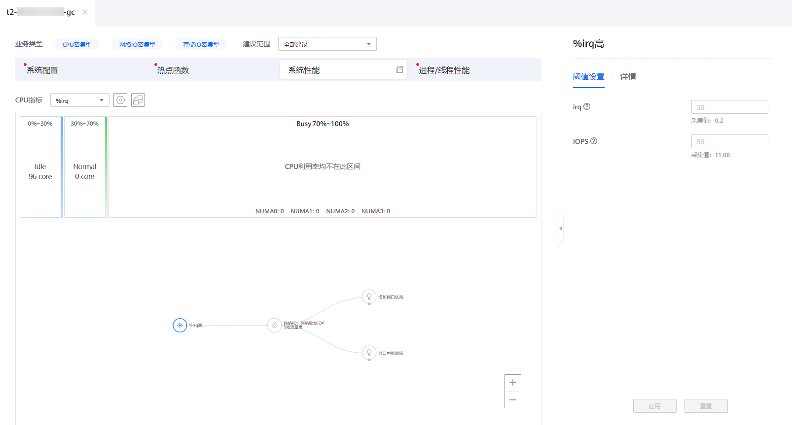
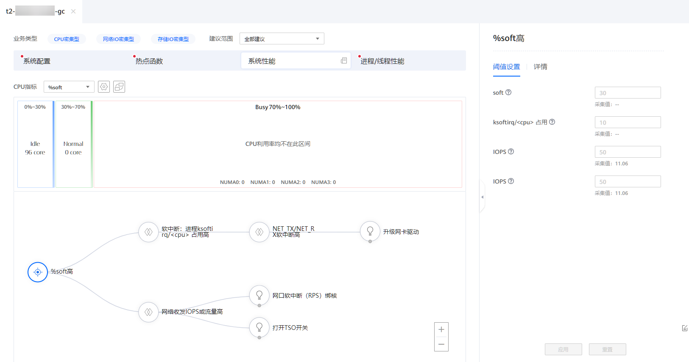
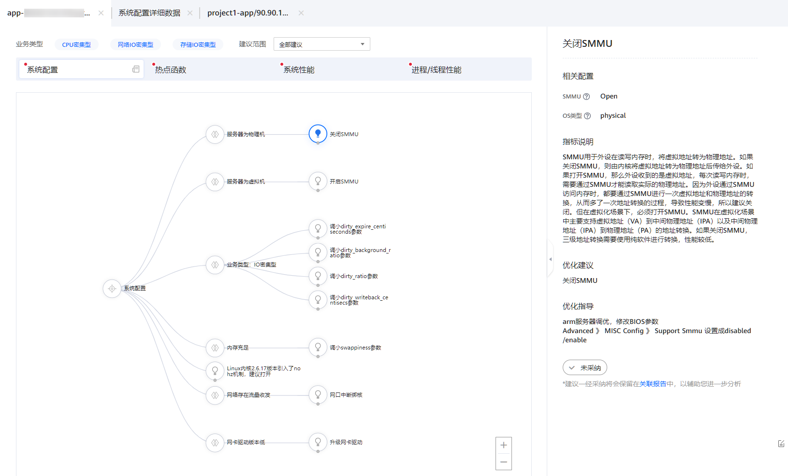

前提条件
已创建分析任务，并且成功完成分析。
操作步骤
- 在“工程管理”区域，依次单击指定工程和分析任务名称前的
 。
。展开节点列表。
- 单击节点名称查看分析结果。
打开分析结果页面。
图1 分析结果页面
- （可选）选择业务类型。
- 根据实际情况选择业务类型。可选类型包括：CPU密集型、网络IO密集型和存储IO密集型。可以选择1~3个业务类型。选中后，选项的文字颜色变为蓝色。默认三个选项均被选中。
- 根据实际情况选择建议范围。可以调节优化建议拓扑树显示“全部建议”或“经过阈值过滤的建议”。图2 选择业务类型
- 点击“系统性能”，查看系统性能分析结果。
打开“系统性能”页面。
图3 系统性能页面
在“系统性能”页面，可以进行以下操作。
- 在“CPU指标”下拉选择框中选择要查看的CPU指标。表1描述了可选的CPU指标。
- 单击
 设置利用率区间。在弹出“利用率区间”对话框中设置CPU利用率Normal范围的起始值和结束值，然后单击“确认”。图4 设置利用率区间
设置利用率区间。在弹出“利用率区间”对话框中设置CPU利用率Normal范围的起始值和结束值，然后单击“确认”。图4 设置利用率区间
 - 单击
 切换视图。
切换视图。调优助手提供下面两种系统性能视图。
- 把鼠标悬停在一个圆圈上，查看该CPU核绑定的NUMA、Core ID和各项性能数据。图7 悬停查看CPU核系统性能数据

- 单击一个圆圈，在右边详情区域查看该CPU核的详细信息，包括该CPU核上运行和进程和线程、硬中断和软中断的信息。图8 查看CPU核详情


可单击展开详情区域。
- 在“CPU指标”下拉选择框中选择要查看的CPU指标。
- 查看状态为Busy的CPU核的系统性能优化建议拓扑树图。
- 当CPU指标设置为%sys且有状态为Busy的CPU核时，页面右边可设置相关参数的阈值并查看详情，页面下方为系统性能优化建议拓扑树图。图9 系统性能优化建议拓扑树图
表2描述了阈值设置区域的各项参数。
表2 阈值设置区域参数说明 参数
描述
网络收发IOPS (%)
IOPS是指单位时间内系统能处理的I/O请求数量，一般以每秒处理的I/O请求数量为单位，I/O请求通常为读或写数据操作请求。
网络丢包
因为缓冲充满，每秒钟丢弃的已接收/已发送数据包数。
网络收发流量低
每秒接收/发送的数据包总数降低。
系统上下文切换
系统上下文切换就是先把上一个任务的CPU上下文（CPU 寄存器和程序计数器）保存起来，然后加载新任务的上下文到这些寄存器和程序计数器，最后再跳转到程序计数器所指的新位置，运行新任务。
cswch/s
每秒主动任务上下文切换次数。
majflt/s
每秒产生的主缺页数，当虚拟内存地址映射成物理内存地址时，相应的页在交换分区中，这样的缺页为主缺页（Major Page Faults），一般在内存使用紧张时产生，需要从硬盘中加载页。
pswin/s
系统每秒换入的交换分区页面总数。
pswpout/s
系统每秒换出的交换分区页面总数。
系统内存使用 (%)
系统内存使用率。
表3描述了优化建议拓扑树图上的主要节点。
表3 系统性能优化建议拓扑树图节点说明 问题节点
描述
网络IO：网络收发IOPS或流量高
IOPS是指单位时间内系统能处理的I/O请求数量，一般以每秒处理的I/O请求数量为单位，I/O请求通常为读或写数据操作请求。
网络IO：网络收发IOPS或流量低
IOPS是指单位时间内系统能处理的I/O请求数量，一般以每秒处理的I/O请求数量为单位，I/O请求通常为读或写数据操作请求。
调度开销：上下文切换次数高
上下文切换就是先把上一个任务的CPU上下文（CPU 寄存器和程序计数器）保存起来，然后加载新任务的上下文到这些寄存器和程序计数器，最后再跳转到程序计数器所指的新位置，运行新任务。
而这些保存下来的上下文，会存储在系统内核中，并在任务重新调度执行时再次加载进来。这样就能保证任务原来的状态不受影响，让任务看起来保持连续运行。
须知：频繁的进行上下文切换将造成系统性能问题。
SWAP：majflt/s高,存在pswpin/s,pswpout/s
每秒钟产生的主缺页数高，系统中存在换入和换出的主缺页。
进程分析：分析TOP %system的进程
CPU的空闲时间占比。
针对表3中列出的每个问题，可以单击节点查看问题详情并单击下一级节点查看对应的优化建议。
- 当CPU指标设置为%user且有状态为Busy的CPU核时，页面右边可设置相关参数的阈值并查看详情，页面下方为系统性能优化建议拓扑树图。图10 系统性能优化建议拓扑树图
表2描述了阈值设置区域的各项参数。
表4 阈值设置区域参数说明 参数
描述
branch miss rate（%）
CPU运行指令分支缺失率。取值为1~100的正整数。
dTLB cache miss rate（%）
数据TLB缓存缺失率。取值为1~100的正整数。
iTLB cache miss rate（%）
指令TLB缓存缺失率。取值为1~100的正整数。
L1-dcache miss rate（%）
L1数据缓存缺失率。取值为1~100的正整数。
L1-icache miss rate（%）
L1指令缓存缺失率。取值为1~100的正整数。
fault/s
每秒系统产生的缺页数。取值为任意正整数。
跨片/跨DIE访问比例（%）
CPU跨片跨DIE访问内存比例。取值为1~100的正整数。
DIE内存消耗比例（%）
DIE内存实际占用与DIE内存最大的比例。取值为1~100的正整数。
表3描述了优化建议拓扑树图上的主要节点。
表5 系统性能优化建议拓扑树图节点说明 问题节点
描述
Branch Miss高
指令运行分支缺失次数较多。
TLB Miss高
当需要访问的虚拟内存，不在TLB当中时，我们称之为TLB Miss。
Cache Miss高
当运算器需要从存储器中提取数据时，它首先在最高级的cache中寻找然后在次高级的cache中寻找。如果在cache中找到，则称为命中hit；反之，则称为不命中miss。
page fault高
系统产生的缺页数高。
L1-icache miss rate
L1指令缓存缺失率较高。
跨片/跨DIE访问比例高
CPU跨片/跨DIE访问内存比例高。
各DIE内存消耗比例不均衡
各DIE内存消耗比例不均衡。
采用访存分析功能
跳转系统性能分析工具进行访存专项分析。
分析TOP %user的进程
切换进程/线程页面查看%user TOP50进程详细数据。
针对表3中列出的每个问题，可以单击节点查看问题详情并单击下一级节点查看对应的优化建议。
- 当CPU指标设置为%iowait且有状态为Busy的CPU核时，页面右边可设置相关参数的阈值并查看详情，页面下方为系统性能优化建议拓扑树图。图11 系统性能优化建议拓扑树图
表6描述了阈值设置区域的各项参数。
表6 阈值设置区域参数说明 参数
描述
iowait
CPU处于空闲状态时间比例。
%util
CPU等待磁盘I/O操作导致空闲状态的时间占CPU总时间的百分比。
读比例
每秒读数据量。
写比例
每秒写数据量。
吞吐量/时延
每秒磁盘 I/O 的流量，即磁盘写入加上读出的数据的大小。
IOPS
每秒的输入输出量(或读写次数)，是衡量磁盘性能的主要指标之一。指单位时间内系统能处理的I/O请求数量，I/O请求通常为读或写数据操作请求。
内存中free空间占比
当内存使用率过高时，它会降低服务器的性能，此时就需要提高内存空闲率。
表7描述了优化建议拓扑树图上的主要节点。
表7 系统性能优化建议拓扑树图节点说明 问题节点
描述
存储IO： %util高
CPU等待磁盘I/O操作导致空闲状态的时间占CPU总时间的百分比。
当 iowait 占用率过高的时候，通常意味着某些程序的 IO 操作效率很低，或者 IO 对应设备的性能很低以至于读写操作需要很长的时间来完成。
吞吐量小时延大
每秒磁盘 I/O 的流量，即磁盘写入加上读出的数据的大小。
IOPS低
每秒的输入输出量(或读写次数)，是衡量磁盘性能的主要指标之一。指单位时间内系统能处理的I/O请求数量，I/O请求通常为读或写数据操作请求。
代码中采用调用异步读写IO接口的方式，如libaio接口
对于磁盘文件，文件的读取是同步的，导致线程读取文件时，属于阻塞状态。程序为了提升性能和磁盘的吞吐，程序会创建几个单独的磁盘读写线程，并通过信号量等机制进行线程间通信（同时带有锁）。显然线程多，锁多，会导致更多的资源抢占，从而导致系统整体性能下降。
内存中free空间占比
当内存使用率过高时，它会降低服务器的性能，此时就需要提高内存空闲率。
分析存储IO操作高的进程,降低读写操作
分析存储IO操作高的进程,降低读写操作。
针对表7中列出的每个问题，可以单击节点查看问题详情并单击下一级节点查看对应的优化建议。
- 当CPU指标设置为%irq且有状态为Busy的CPU核时，页面右边可设置相关参数的阈值并查看详情，页面下方为系统性能优化建议拓扑树图。图12 系统性能优化建议拓扑树图
表8描述了阈值设置区域的各项参数。
表8 阈值设置区域参数说明 参数
描述
irq
CPU服务硬件中断所花费时间占CPU总时间的百分比。
IOPS
每秒的输入输出量(或读写次数)，是衡量磁盘性能的主要指标之一。指单位时间内系统能处理的I/O请求数量，I/O请求通常为读或写数据操作请求。
表9描述了优化建议拓扑树图上的主要节点。
表9 系统性能优化建议拓扑树图节点说明 问题节点
描述
网络IO：网络收发IOPS或流量高
IOPS是指单位时间内系统能处理的I/O请求数量，一般以每秒处理的I/O请求数量为单位，I/O请求通常为读或写数据操作请求。
针对表9中列出的每个问题，可以单击节点查看问题详情并单击下一级节点查看对应的优化建议。
- 当CPU指标设置为%soft且有状态为Busy的CPU核时，页面右边可设置相关参数的阈值并查看详情，页面下方为系统性能优化建议拓扑树图。图13 系统性能优化建议拓扑树图
表10描述了阈值设置区域的各项参数。
表10 阈值设置区域参数说明 参数
描述
soft
CPU服务软件中断所花费时间占CPU总时间的百分比。
ksoftirq/<cpu> 占用
ksoftirq进程占用CPU百分比。
IOPS
每秒的输入输出量(或读写次数)，是衡量磁盘性能的主要指标之一。指单位时间内系统能处理的I/O请求数量，I/O请求通常为读或写数据操作请求。
表11描述了优化建议拓扑树图上的主要节点。
表11 系统性能优化建议拓扑树图节点说明 问题节点
描述
软中断：进程ksoftirq/<cpu> 占用高
内核中的ksoftirqd进程专门负责软中断的处理，当它收到软中断后，就会调用相应软中断所对应的处理函数，对于网卡驱动模块抛出的软中断，ksoftirqd的最终处理逻辑是将网卡写入到内存中的数据包转换成内核网络模块能识别的skb格式，然后将数据交给协议栈处理。
网络收发IOPS或流量高
单位时间内通过某个网络（或信道、接口）的收发数据量过高。
针对表11中列出的每个问题，可以单击节点查看问题详情并单击下一级节点查看对应的优化建议。
- 当CPU指标设置为%idle且有状态为Busy的CPU核时，页面右边可设置相关参数的阈值并查看详情，页面下方为系统性能优化建议拓扑树图。图14 系统性能优化建议拓扑树图

表12描述了阈值设置区域的各项参数。
表12 阈值设置区域参数说明 参数
描述
idle
CPU空闲且系统没有未完成的存储I/O请求的时间占总时间的百分比。
网络收发吞吐量（%）
单位时间内通过某个网络（或信道、接口）的收发数据量过高。
net.ipv4.tcp_wmem
CPU空闲且系统没有未完成的存储I/O请求的时间占总时间的百分比。
net.ipv4.tcp_rmem
内配置读缓冲的大小，三个值，第一个是这个读缓冲的最小值，第三个是最大值，中间的是默认值。
net.core.wmem_max
发送套接字缓冲区大小的最大值（以字节为单位）。
net.core.rmem_max
接收套接字缓冲区大小的最大值。
net.core.somaxconn
服务端所能accept即处理数据的最大客户端数量，即完成连接上限。
net.ipv4.tcp_max_syn_backlog
tcp_max_syn_backlog是指定所能接受SYN同步包的最大客户端数量。
表13描述了优化建议拓扑树图上的主要节点。
针对表13中列出的每个问题，可以单击节点查看问题详情并单击下一级节点查看对应的优化建议。
- 当CPU指标设置为%sys且有状态为Busy的CPU核时，页面右边可设置相关参数的阈值并查看详情，页面下方为系统性能优化建议拓扑树图。
- 根据优化建议拓扑树，进行调优设置。
- 查看分析结果页面的优化建议拓扑树图，单击根据配置条件
 ，单击
，单击 选择对应的调优建议。图15 优化建议拓扑树图
选择对应的调优建议。图15 优化建议拓扑树图
 - 查看右侧调优建议中的相关配置、指标说明、优化建议及优化指导。单击确定采纳该调优建议，再次单击取消采纳该调优建议。图16 调优建议页面

- 已采纳的调优建议将会保留在关联报告中，单击页面右下角“关联报告”进入关联报告页面。
关联报告页面会显示已经采纳的所有调优建议，单击任务名称可进行查看。根据采纳的调优建议是否达到预期目标，单击左下角“有效”和“无效”进行确定。
图17 关联报告页面
- 查看分析结果页面的优化建议拓扑树图，单击根据配置条件
- 单击“系统性能”右侧的
 查看系统性能详细数据。图18 查看系统性能详细数据
查看系统性能详细数据。图18 查看系统性能详细数据